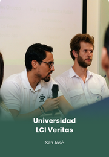
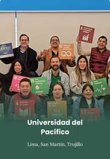
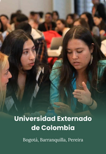

Each hub equips founders with curriculum, workspace, technical support, and sovereign-aligned templates, so ventures can become deployment-ready within national development strategies.
https://www.pvblic.org/rein-hubs
Four pathways

Ideation
Early-stage idea development for innovators and students exploring environmental solutions.
Incubation
National incubation programs within each university hub, building viable ventures.

Acceleration
Regional acceleration for high-potential ventures ready to scale across markets.

Investment Readiness
Mentorship, ESG/MRV support, and investor engagement to secure growth capital.
[DECISION: fourth stage name — Investment Readiness on the program page, or Growth in the Ghana label. Order of the four names is not locked.]
[DECISION: HTML durations or PDF page 8 durations]
What startups get
Support lines: decks/rein-academic-city-ghana/sources/academic-city-ghana-2026-04-23.html#support
Direct Support
Mentor matching, bootcamps, workshops, pitch coaching and workbooks delivered through the Kintec Academy digital platform.
Network Access
University partners, European corporates, multilateral agencies, sponsor networks, FOSD family office network, UN SDG Joint Fund.
ClimateLaunchpad
Direct entry to the world's largest green business idea competition, with finals in Singapore each October — a continental scale-up route.
REIN Live & Global Events
REIN Live webinar series spotlighting hub achievements, with presence at COP, Climate Week NYC, UNGA, and the CEEA Accra summit.
At the Core — Founders
Early-stage climate, cleantech, circular-economy and resilient-supply ventures — with a deliberate focus on women and under-represented founders in emerging markets.
Five active hubs
Colombia, Perú, Guatemala, Costa Rica, and El Salvador — five fully active hubs on https://www.pvblic.org/rein-hubs.
Through activation, incubation, acceleration, and growth programs, REIN Hubs backs early-stage climate and cleantech founders with capital, mentorship, and corporate access.
academic-city-ghana-2026-04-23.html overview. Stage label “growth” on that line is not locked against Investment Readiness on the program page.
Derived conversion ratios
Source counts: https://www.pvblic.org/rein-hubs, By the Numbers. Gideon, 22 Oct 2026.